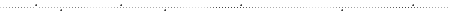

サイト名 / 雲の呼吸と同じリズムで。 管理人 / 風野 湊 アドレス http://feelingsky.web.fc2.com/index.html バナー http://feelingsky.web.fc2.com/banner.gif（直リンク可） 当サイトはリンクフリーです。ご報告いただけると管理人が嬉しくなります。笑。  The Wonderful Worlds 創作サイト様 obbligato / 傘をひらいて、空を / walk the subway / lib / カオスカオスブックス / 旅書簡集 ゆきあってしあさって / FOE-HP / mo e no / 素材サイト様 アンの小箱 / NOION / Little Eden / 700km / 一実のお城 / Studio Blue Moon / 幻想素材館 Dream Fantasy / *Design Labo* / 空色地図 / Egg*Station / ポカポカ色 / shape / NEO HIMEISM / 写真屋水珠 / アトリエ夢夏色 / Silverry moon light / 空に咲く花 （閉鎖されました。素敵な素材をありがとうございました！） ** macherie *** / fururuca 参加同盟 吟遊空想同盟 / 瞬きの詩人会 / 親バカ同盟 / まったりカフェ同盟 /STARBUCKS UNION / Sound Horizon Lover / 登録サーチ Tint Search / 文芸Webサーチ / ElDorado Love call 村山早紀の風の丘通信 / Patric Rothfuss Official Website / AYUMU CHANNEL / Ashes and Snow / Cocco offcial Site / With R ←BACK TOP